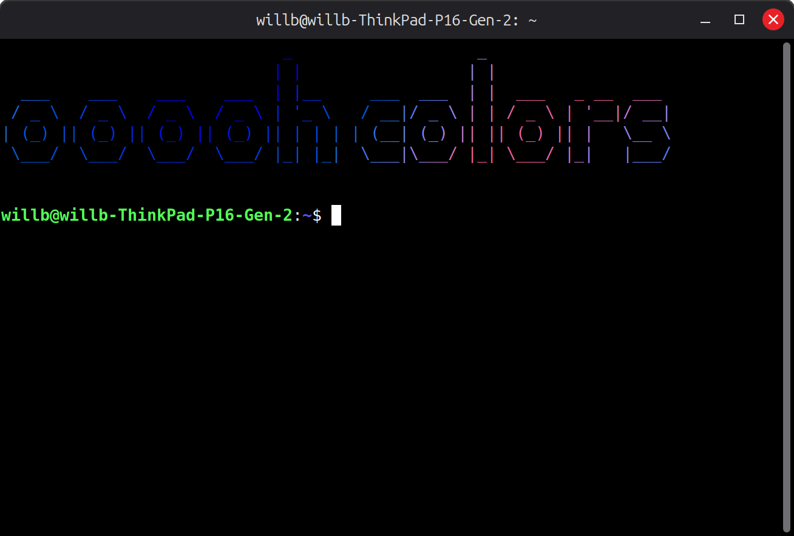
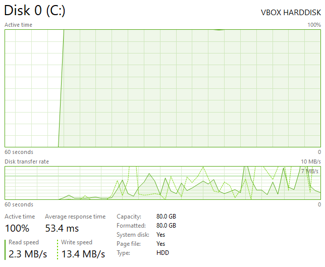

♥♥♥♥ Just Works!
I love it when ♥♥♥♥ Just Works (tm)! I don't think there's actually a trademark, but I am compelled to add it regardless. Below is a list of ♥♥♥♥ that Just Works (tm) that I have been dealing with this week.
FIGlet & other cool text stuff
____ ___ ____ _ _
| ___|_ _/ ___| | ___| |_
| |_ | | | _| |/ _ \ __|
| _| | | |_| | | __/ |_
|_| |___\____|_|\___|\__|
FIGlet is a program that lets you turn text into multi-line row representations of text.
I've been using it to print funny little blurbs of text at the start of every terminal session. Below is an example output.

Note that it is colored, which isn't something that FIGlet does. I was surprised that you can actually put any arbitrary color in the terminal, but you can. Anyways, the utility I used to do this is lolcrab. It's like lolcat, but with some extra functionality, including more gradient options.
I made a funny little script in Lua to select a random message, random font, and random color scheme, so that it isn't the same every time. Thank God for Lua not being a piece of ♥♥♥♥ like some other languages-- in the early stages it was all in bash, which was just insufferable. Though, I have been meaning to look at a couple of other scripting languages to gain more perspective on it all. Regardless, I think that Lua is still a solid choice here since it is very lightweight, preventing the terminal from hanging when starting. Of course, C or any compiled language would be faster but I didn't want to do that.
The version of FIGlet that my instance of Linux Mint came with let you apply filters (being a very outdated version). This is largely redundant because you can just pipe the output into some other coloring tool (like lolcat / etc.), but I bring it up because one of the filters was a rainbow filter, just called "gay". I thought that was funny.
VMs on encrypted volumes
Recently I have been trying out using a virtual machine on an encrypted volume. By this, I mean creating an encrypted archive (done with
Veracrypt or similar), and then sticking the virtual machine files inside. I believe
VirtualBox (which is what I use) supports some form of encryption
on their disk volumes, but supposedly this has limitations, and just seems less secure. Just putting the VM data inside an encrypted volume
is a surefire way for no surprises.
There's not much practical reason to do this, by the way. My main practical motivation is just to be able to work with sensitive information (legal documents, SSN, anything embarrasing, etc.)
and not have to worry about traces of that data remaining somewhere on disk. Of course, data can just float around in AppData (in the case of Windows) or in some cache,
but it can also be potentially left behind sitting in the drive unallocated-- you would
actually be surprised by the depth of random ♥♥♥♥♥♥♥♥ just sitting unallocated on your drive. I ran some
file recovery software (TestDisk) on my main drive, results shown below.
| txt | tx? | png | jpg | gz | exe | gif | riff | bmp | tz | others |
|---|---|---|---|---|---|---|---|---|---|---|
| 29988 | 15894 | 4819 | 4463 | 3914 | 1846 | 1479 | 728 | 385 | 339 | 957 |
This amounts to about 64k files with 60GB of data. Unrelatedly, the file type frequency data interestingly did not really follow a Zipfian or similar distribution, as I figured it might.
The first time I made a VM in an encrypted volume, I put it on my HDD to save space on my SSD. Horrible decision.
Obviously there will be more lag with the encryption rather than just doing it raw,
but it was actually even worse than I thought--
I was pulling maybe ~5 - 10% of the max speed the hard drive normally pulls, about 12MB/s. For example, in downloading anything, my limiting factor would be
the ♥♥♥♥♥♥♥ drive, not my network.

This ♥♥♥♥ was borderline unusable.
I figure this is probably caused by continous blurbs of data on the encrypted volume not corresponding to continous blurbs of data on the actual drive, meaning the head of the drive would have to jump around a lot. Essentially, it seemed to behave as if the drive was heavily fragmented. Anyways, it was overall very ♥♥♥♥♥♥.
Anyway, despite how slow and ♥♥♥♥♥♥ it was, I was not deterred. That is, until I made the mistake of accidently shutting down my actual machine, instead of the virtual machine, while (of course) the VM was running and the encrypted volume was still mounted. As a result, my virtual machine installation got fried. Curses to those buttons for being so close together and so similar looking!
It had issues booting, and so went through the disk fixing procedure that Windows has. To Microsoft's credit, it eventually got to boot despite probably having some really bad corruption. However, the VM would stil crash about a minute after being launched every time, without even a BSOD, so I eventually had to give up. I couldn't be bothered to fix that.
Anyway, I set up the VM again, and this time I put the VM on my SSD. It is... actually very useable. I can even download something, and get rate limited by my network of 80Mbps down instead of the ♥♥♥♥♥♥♥ drive!
Anyways, I think it's really cool that you can do this at all, and that with little hassle, It Just Works (tm).
Baking tortilla chips
I used to live in an area where I could easily buy fresh tortilla chips (which trust me,
are way better than packaged ones). That's not the case anymore, and I just can't return to getting packaged ones after being enlightened.
So I thought about it, and looked up a recipe for making them in case they were easy. Turns out, they ARE easy. Literally all you do is take some corn tortillas,
oil them up a little bit, cut them up, stick them in the oven for ~15 minutes at 375 degrees, then add salt if you want, and that is it. It Just Works (tm).
It's a small enough amount of required effort that I don't mind doing it. Anyways, here's a picture of some that I made.
SEE YOU SPACE COWBOY...
bye